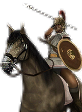
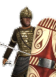
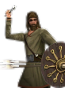
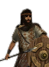
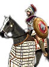
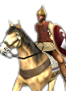
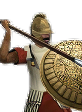
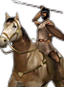
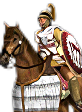

RTR: Imperium Surrectum
RTR: Imperium SurrectumWhat is already built
What can be recruited here
| Unit | Raised at | Cost | Upkeep | Unit | Raised at | Cost | Upkeep | Unit | Raised at | Cost | Upkeep | |||
|---|---|---|---|---|---|---|---|---|---|---|---|---|---|---|
 | Caetrati Cavalry | Region Information Scroll | 1,707 | 687 | Caetrati Infantry | Region Information Scroll | 1,562 | 572 |  | Iberian Heavy Infantry | Region Information Scroll | 2,142 | 784 | |
 | Iberian Skirmishers | Region Information Scroll | 1,029 | 377 |  | Iberian Tribesmen | Region Information Scroll | 1,506 | 551 | Mercenary Balearic Slingers | Region Information Scroll | 1,798 | 658 | |
| Scutarii Cavalry | Region Information Scroll | 2,270 | 914 | Scutarii Spearmen | Region Information Scroll | 1,676 | 613 |
13 more units once the building is up — greyed out, with what each needs.
13 units this settlement raises once you build for them
| Unit | Once you have | Cost | Upkeep | Unit | Once you have | Cost | Upkeep | Unit | Once you have | Cost | Upkeep | |||
|---|---|---|---|---|---|---|---|---|---|---|---|---|---|---|
 | Carthaginian General's Bodyguard | Homeland | 4,500 | 68 | Libyan Light Infantry | Homeland | 1,622 | 594 | Libyan Skirmishers | Homeland | 1,012 | 370 | ||
| Libyan Slingers | Homeland | 915 | 335 |  | Libyo-Phoenician Cavalry | Homeland | 1,941 | 781 |  | Libyo-Phoenician Infantry | Homeland | 1,973 | 722 | |
| Numidian Archers | Homeland | 1,326 | 485 |  | Numidian Cavalry | Homeland | 1,669 | 672 |  | Sacred Band of Astarte | Homeland | 2,946 | 1,186 | |
| Sacred Band of Baal | Homeland | 2,811 | 1,029 |
| Unit | Once you have | Cost | Upkeep | Unit | Once you have | Cost | Upkeep | |||||||
|---|---|---|---|---|---|---|---|---|---|---|---|---|---|---|
| Ballistas | Armourer (Industry), Foundry (Industry) | 1,797 | 658 | Lithoboloi | Armourer (Industry), Foundry (Industry) | 2,592 | 949 |
| Unit | Once you have | Cost | Upkeep | |||||||||||
|---|---|---|---|---|---|---|---|---|---|---|---|---|---|---|
| Large Lithoboloi | Foundry (Industry) | 3,132 | 1,146 |